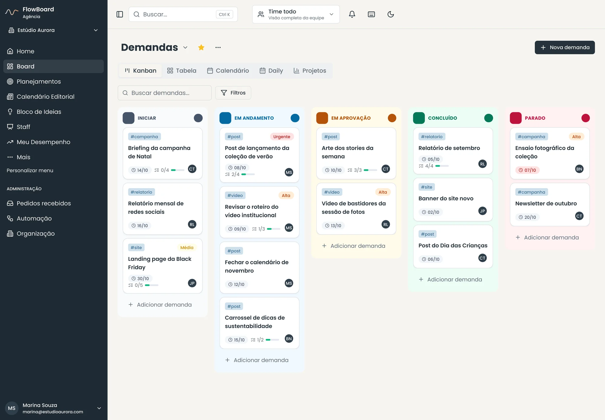
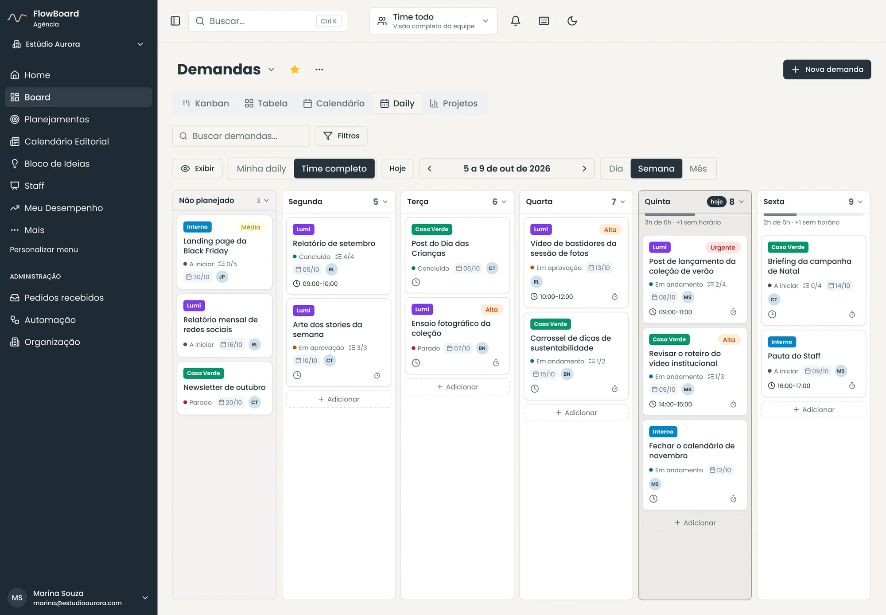
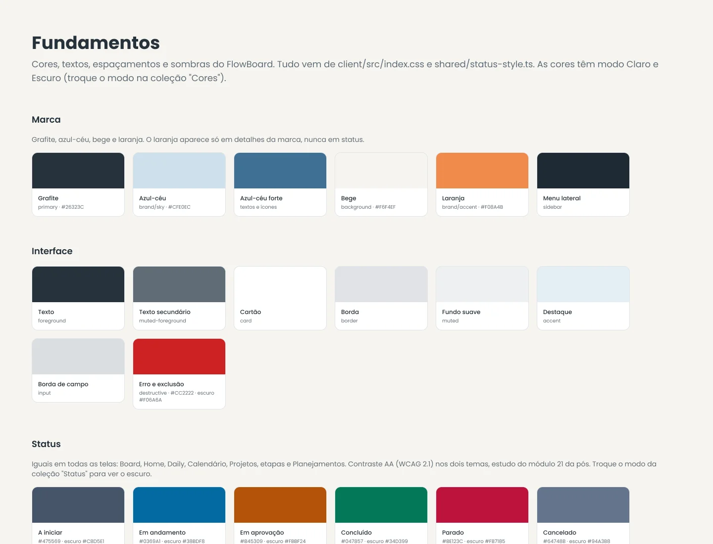
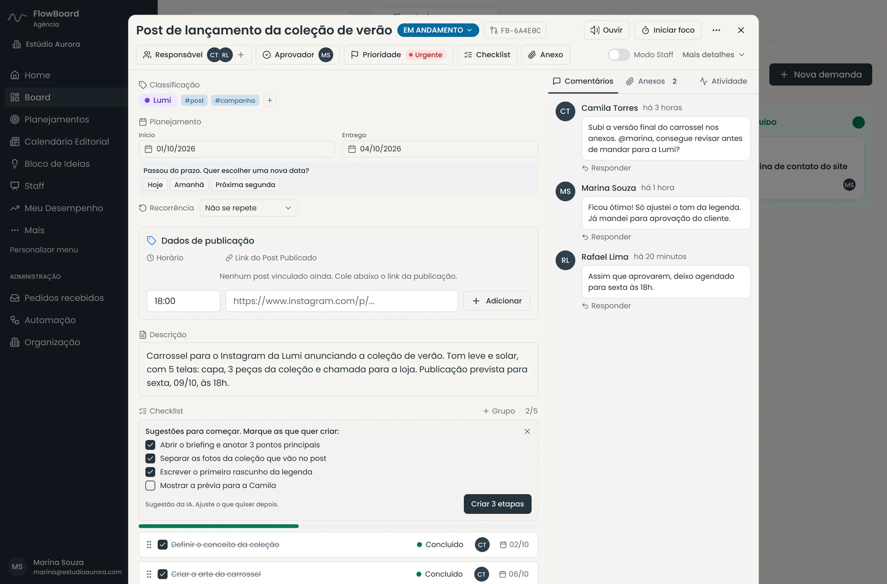
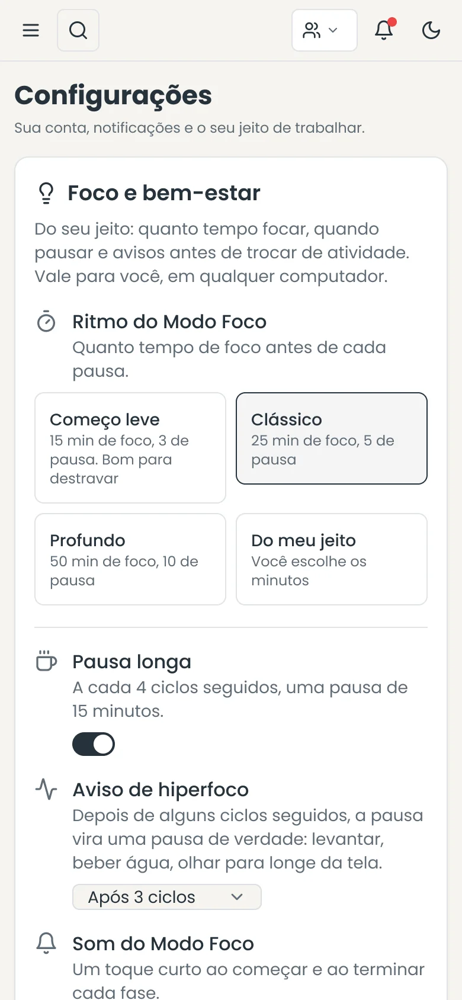
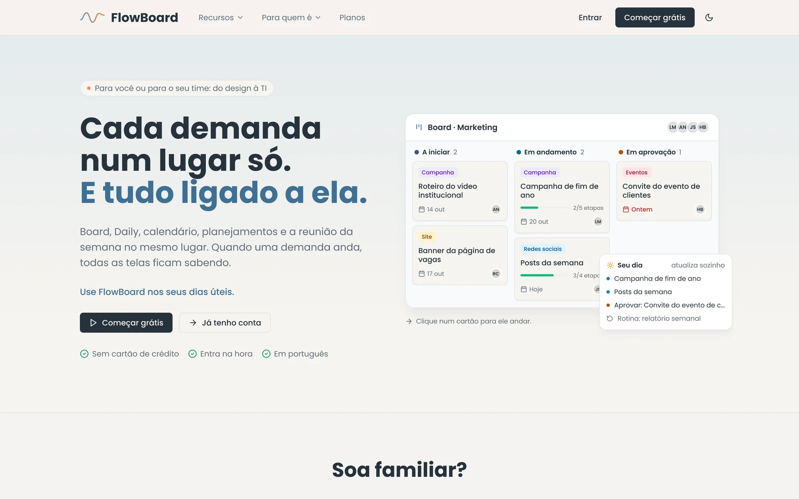
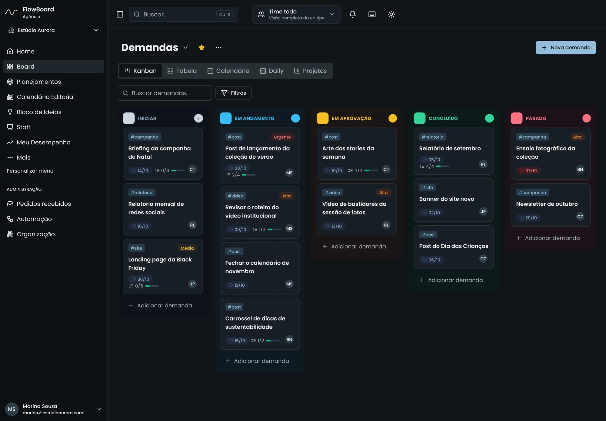
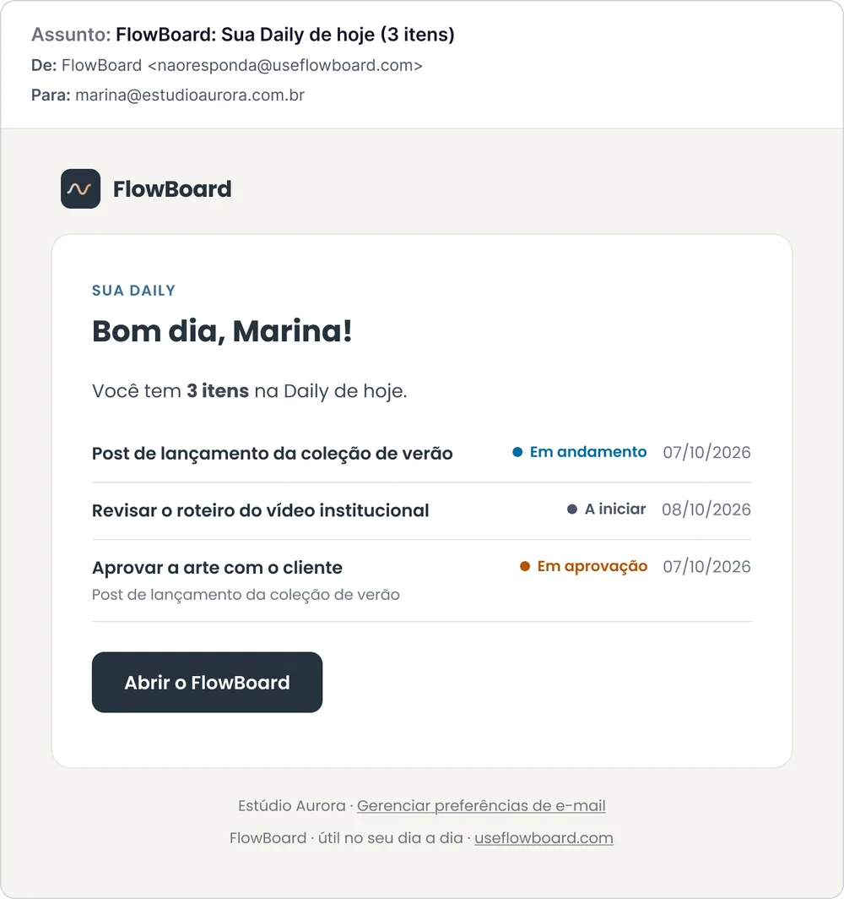

Produto autoral · 2026
FlowBoard
Plataforma de gestão de demandas que eu idealizei, desenhei e programei. Nasceu para organizar o time de Comunicação do Talenses Group e virou produto: board, daily, calendário editorial, planejamentos, portal de chamados e recursos de foco que cada pessoa liga só se quiser. Também fiz a marca, o design system, o site e os e-mails.
Conhecer o FlowBoard ↗
O desafio
O time de Comunicação atende sete marcas do grupo ao mesmo tempo. Os pedidos chegavam por e-mail, Teams e conversa de corredor, e ninguém tinha uma visão única do que estava atrasado, em aprovação ou parado.
As ferramentas prontas ou eram genéricas demais, ou viravam mais um sistema para alimentar. Eu queria algo que organizasse o trabalho sem pesar, inclusive para quem se distrai fácil ou trava na hora de começar.
O processo
Comecei pela demanda como centro de tudo: board, tabela, calendário, daily e projetos são só jeitos diferentes de olhar a mesma coisa. Cada nova tela precisa se ligar às demandas, em vez de virar um sistema à parte.

Criei a identidade “grafite e céu”: grafite, azul-céu e bege, com um laranja que aparece só em detalhes da marca. As cores de status (verde, âmbar, azul, cinza e vermelho) ficam fixas e nunca se misturam com a marca.
Tudo virou um design system no Figma, com variáveis de modo claro e escuro espelhando o código.

Os recursos de foco são opcionais e descritos por situação, sem rótulos: avisos gentis, sugestões, modo calmo e leitura confortável. Cada pessoa liga só o que ajuda.


O resultado
Hoje o FlowBoard organiza o dia a dia do time, do pedido que chega até a entrega, e tem site próprio, planos e e-mails transacionais.
- 7marcas do grupo num só board
- 120+telas desenhadas no Figma
- 11e-mails do sistema
- 2temas: claro e escuro



Use FlowBoard nos seus dias úteis.
Board, daily, calendário editorial e os pedidos do time num lugar só. Feito por quem trabalha com criação e comunicação, para times que vivem de prazo.
Sem cartão de crédito. Nos primeiros 14 dias, o plano Agência fica liberado.